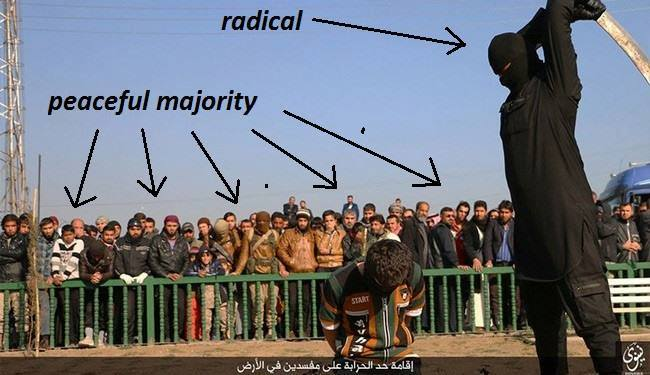
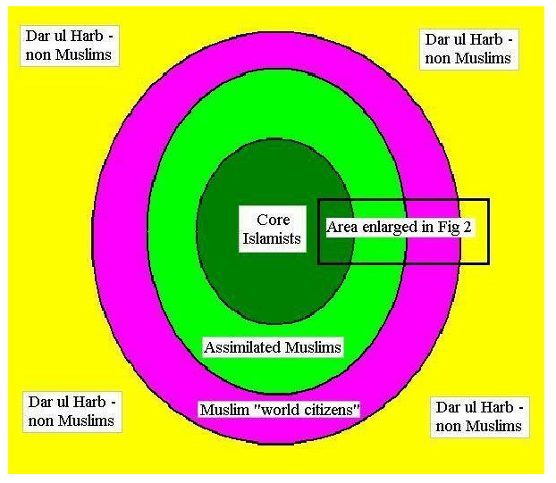

Good muslim con
- avidyA (ignorance): “Good acts of some muslims towards kufrs prove the benignness of Islam.”
- vidyA (knowledge): “Considering both good and bad acts of muslims, Islam is a virulent memetic disease of epidemic proportions with an overwhelmingly net negative effect on the host kufr population.”
- See sphulinga/u3mob stream
- See sphulinga/u3support stream
Details follow.
Outlier nature
- “Good” acts of muslims towards kufr, even when taken at face value (ie not taqiyyah), are notable precisely because they are extraordinary.
- Islam severely impedes the ability of muslims to sympathize with kufr interests, just as loss of a limb severely impedes the ability of handicapped people to do mountaineering. What is perfectly natural for a normal healthy person is extraordinary for such a person. The extraordinary muslim who is good to kufr interests may be noted with excitement just as the extraordinary handicapped person climbing mount Everest. It is foolish to conclude from such examples that polio or the resulting “loss of limb” is no serious impediment to movement (let alone mountaineering).
- See muslim typography here.
Limited potency of the mildly infected
- In a muslim society, these numerous tolerant muslims tend not to successfully challenge their more virulent corelegionists that stick to their constitution (Quran, Hadith etc..) - as observing Terrorist state of Pakistan, Afghanistan, Iran, Saudi Arabia etc.. (as of 2014) will reveal.
- So, while some may make some statements sympathizing with victims of jihaadi attacks, condemning terrorists - they hardly take to arms at a rate sufficient to neutralize their anti-kufr jihadi warriors. So, the net effect of Islam remains negative to the kufr population.
- Rather, they tend to mostly cooperate (with or without misgivings) in heinous acts. So, it certainly matters what the RoP holy books say.
- But, their “moderation” has very weak theological basis/ solid clerical support, as explained in a separate section.
- Related streams: #u3mob

Good muslims
- Many muslims are good (or atleast appear good under many circumstances) and benign towards non-muslims despite their religion.
- Such goodness (or appearence thereof) may manifest itself through statements sympathizing with victims of jihaadi attacks, condemning jihadi terrorists, and very rarely - by actually fighting against jihadis.
- Not every Nazi party member during WW2 was actually a bad person - there were even the likes of Oskar Schindler - similar is the case with Muslims.
Examples
- Eg: dharmadeen list,gay imam.
Source of goodness
- Islam is not the only motivator for every action of a muslim.
- Some apparent goodness towards the kufr is a matter of posturing (taqiyyah) - a precautionary dissimulation or denial of religious belief and practice under compulsion.